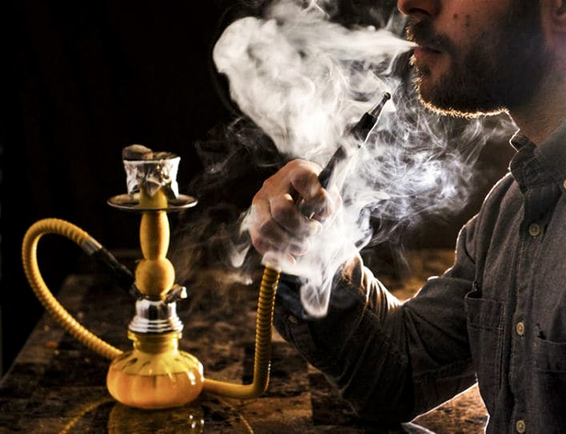

Transmita amor e não fumaça: Diga não ao narguilé!
O Narguilé tem origem no Oriente. Uma das versões é a de que o narguilé teria sido inventado na Índia do século XVII, pelo médico Hakim Abul Fath, como um método para retirar as impurezas da fumaça. Quando chegou à China, passou a ser utilizado para fumar o ópio, e assim permaneceu até a revolução comunista, no fim da década de 1940. Na mão dos árabes, o cachimbo de água foi rapidamente incorporado para ser apreciado em grupo, acompanhado de café e prosa. Existem evidências históricas de narguilés na Pérsia e na Mesopotâmia. As peças mais primitivas eram feitas com madeira e um coco que fazia o lugar do corpo (o nome origina-se do persa nārgil, que significa "coco"). Com o desenvolvimento das civilizações e as expansões territoriais (principalmente dos países europeus), o narguilé, já similar ao que conhecemos hoje (com base de cerâmica ou porcelana e corpo de metal), começou a ser divulgado, e trazido junto com especiarias como cravo e canela.
Para os pesquisadores, o crescimento do narguilé representa uma ameaça à redução dos indicadores de fumo no país, além de ameaçar a saúde dos jovens. Dados da Organização Mundial da Saúde (OMS) indicam que uma sessão de narguilé de vinte a oitenta minutos corresponde à exposição de componentes tóxicos presentes na fumaça de 100 cigarros. Segundo o A.C. Camargo Cancer Center, a quantidade de monóxido de carbono (CO) inalada no consumo do produto é muito maior que no cigarro, já que não utiliza filtro.
O narguilé definitivamente está na moda e caiu no gosto do brasileiro. Segundo o Instituto Brasileiro de Geografia e Estatística (IBGE), somente em nosso país, pelo menos 212 mil pessoas fumam narguilé.
A experimentação de narguilé, uma espécie de cachimbo (26,9%), cigarro eletrônico (16,8%) e outros produtos do tabaco (9,3%) também se mostra elevada entre os adolescentes, especialmente os do sexo masculino de 16 a 17 anos.
Adolescência é uma fase de iniciação de novos comportamentos sociais, os quais podem ser determinantes para a saúde durante a vida adulta, como o desenvolvimento de Doenças Crônicas Não Transmissíveis (DCNT). Daí a necessidade de monitoramento do consumo dos produtos do tabaco nessa população, a fim de apoiar as agendas e os compromissos nacionais e globais sobre o tema.
FONTE:Trabalhos Feitos, 2022. Disponível em:https://www.trabalhosfeitos.com/ensaios/a-Origem-Do-Narguile/51919112.html